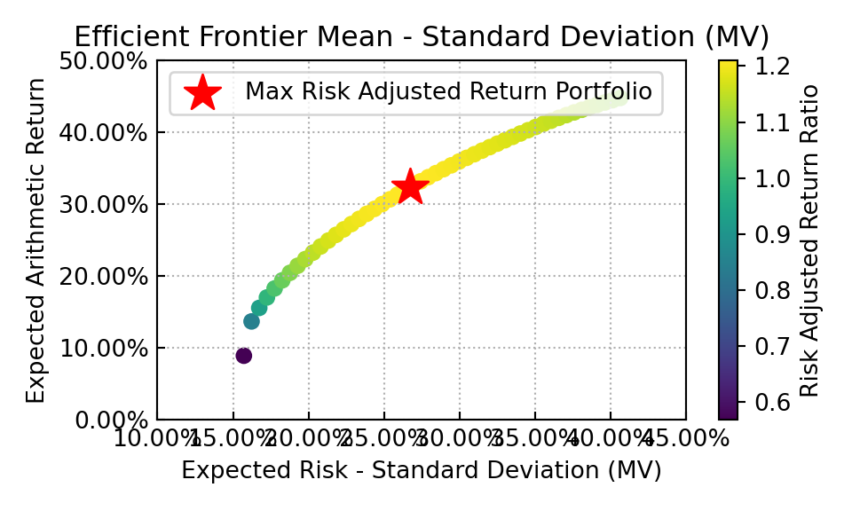

# will cut this out after I make sure I grok the different YAML params
# ... many of which turned out to be unnecessary only AFTER I
# upgraded Quarto to the prerelease version. So what I thought were
# YAML problems were maybe bugs
# prior v2
# jupyter: python3
# python:
# path: "D:/anaconda3/python.exe"
# initial YAML v1
# engines:
# r: default
# jupyter: python3
# format:
# html:
# code-fold: true
import numpy as np
import pandas as pd
import riskfolio as rp
import matplotlib.pyplot as plt
import yfinance as yf
import warnings
warnings.filterwarnings("ignore")
pd.options.display.float_format = '{:.4%}'.format
# Date range
start = '2021-03-31'
end = '2024-05-10'
# Tickers of assets
assets = ['TMHC', 'LEN', 'ESTC', 'DHI', 'INVH',
'GOOGL', 'COUR', 'DT', 'META', 'DDOG',
'HASI', 'AMH', 'DBX', 'ZUO', 'BLK',
'DELL', 'TJX', 'O', 'STAG', 'ENB']
assets.sort()
# Downloading data
data = yf.download(assets, start = start, end = end)
[ 0%% ]
[***** 10%% ] 2 of 20 completed
[******* 15%% ] 3 of 20 completed
[********** 20%% ] 4 of 20 completed
[************ 25%% ] 5 of 20 completed
[************** 30%% ] 6 of 20 completed
[***************** 35%% ] 7 of 20 completed
[******************* 40%% ] 8 of 20 completed
[**********************45%% ] 9 of 20 completed
[**********************50%% ] 10 of 20 completed
[**********************55%% ] 11 of 20 completed
[**********************60%%*** ] 12 of 20 completed
[**********************65%%***** ] 13 of 20 completed
[**********************70%%******** ] 14 of 20 completed
[**********************75%%********** ] 15 of 20 completed
[**********************80%%************ ] 16 of 20 completed
[**********************85%%*************** ] 17 of 20 completed
[**********************90%%***************** ] 18 of 20 completed
[**********************95%%******************** ] 19 of 20 completed
[*********************100%%**********************] 20 of 20 completeddata = data.loc[:,('Adj Close', slice(None))]
data.columns = assets
Y = data[assets].pct_change().dropna()
print(Y.head()) AMH BLK COUR ... TJX TMHC ZUO
Date ...
2021-04-01 2.6695% 1.7070% 1.7333% ... -0.2570% 2.7913% 1.2838%
2021-04-05 -1.3147% 2.2417% 8.3661% ... 2.6978% 2.5576% 0.0000%
2021-04-06 1.6578% -0.2946% 13.3441% ... -0.1771% -0.7697% 2.2682%
2021-04-07 -0.4077% 0.8046% 3.1478% ... 0.2070% -2.3891% -1.9569%
2021-04-08 0.0000% 1.5990% -3.4483% ... 1.8442% -2.7336% 12.4418%
[5 rows x 20 columns]#
#
average_returns = Y.mean()
volatilities = Y.std()
cov_matrix = Y.cov()
print("Average Returns:\n", average_returns)Average Returns:
AMH 0.0297%
BLK 0.0301%
COUR -0.1420%
DBX 0.0046%
DDOG 0.1143%
DELL 0.1776%
DHI 0.0939%
DT 0.0328%
ENB 0.0345%
ESTC 0.0653%
GOOGL 0.0838%
HASI 0.0057%
INVH 0.0337%
LEN 0.0881%
META 0.1078%
O 0.0115%
STAG 0.0354%
TJX 0.0696%
TMHC 0.1139%
ZUO 0.0100%
dtype: float64print("Volatilities:\n", volatilities)Volatilities:
AMH 1.4660%
BLK 1.7092%
COUR 3.5182%
DBX 2.0984%
DDOG 3.8260%
DELL 2.5601%
DHI 2.1771%
DT 2.7356%
ENB 1.2504%
ESTC 3.8681%
GOOGL 1.9961%
HASI 3.3490%
INVH 1.5113%
LEN 2.1445%
META 3.0246%
O 1.2524%
STAG 1.5397%
TJX 1.5504%
TMHC 2.4480%
ZUO 3.2840%
dtype: float64print("Covariance Matrix:\n", cov_matrix)Covariance Matrix:
AMH BLK COUR DBX ... STAG TJX TMHC ZUO
AMH 0.0215% 0.0124% 0.0143% 0.0105% ... 0.0158% 0.0078% 0.0158% 0.0169%
BLK 0.0124% 0.0292% 0.0207% 0.0166% ... 0.0152% 0.0138% 0.0228% 0.0267%
COUR 0.0143% 0.0207% 0.1238% 0.0280% ... 0.0146% 0.0150% 0.0258% 0.0492%
DBX 0.0105% 0.0166% 0.0280% 0.0440% ... 0.0108% 0.0112% 0.0210% 0.0351%
DDOG 0.0193% 0.0275% 0.0568% 0.0378% ... 0.0188% 0.0185% 0.0342% 0.0699%
DELL 0.0093% 0.0175% 0.0141% 0.0147% ... 0.0111% 0.0108% 0.0232% 0.0222%
DHI 0.0143% 0.0204% 0.0226% 0.0187% ... 0.0164% 0.0154% 0.0454% 0.0274%
DT 0.0138% 0.0222% 0.0413% 0.0325% ... 0.0138% 0.0162% 0.0243% 0.0525%
ENB 0.0072% 0.0106% 0.0073% 0.0066% ... 0.0079% 0.0063% 0.0107% 0.0109%
ESTC 0.0204% 0.0274% 0.0639% 0.0415% ... 0.0199% 0.0192% 0.0315% 0.0685%
GOOGL 0.0106% 0.0179% 0.0253% 0.0206% ... 0.0119% 0.0112% 0.0218% 0.0282%
HASI 0.0205% 0.0237% 0.0350% 0.0213% ... 0.0220% 0.0142% 0.0305% 0.0419%
INVH 0.0197% 0.0132% 0.0143% 0.0100% ... 0.0162% 0.0082% 0.0163% 0.0173%
LEN 0.0145% 0.0204% 0.0234% 0.0185% ... 0.0168% 0.0154% 0.0444% 0.0285%
META 0.0140% 0.0222% 0.0359% 0.0264% ... 0.0151% 0.0152% 0.0296% 0.0362%
O 0.0116% 0.0098% 0.0090% 0.0065% ... 0.0129% 0.0061% 0.0127% 0.0114%
STAG 0.0158% 0.0152% 0.0146% 0.0108% ... 0.0237% 0.0086% 0.0190% 0.0184%
TJX 0.0078% 0.0138% 0.0150% 0.0112% ... 0.0086% 0.0240% 0.0167% 0.0168%
TMHC 0.0158% 0.0228% 0.0258% 0.0210% ... 0.0190% 0.0167% 0.0599% 0.0300%
ZUO 0.0169% 0.0267% 0.0492% 0.0351% ... 0.0184% 0.0168% 0.0300% 0.1078%
[20 rows x 20 columns]# Building the portfolio object
port = rp.Portfolio(returns=Y)
# Calculating optimal portfolio
# Select method and estimate input parameters:
method_mu='hist' # Method to estimate expected returns based on historical data.
method_cov='hist' # Method to estimate covariance matrix based on historical data.
port.assets_stats(method_mu=method_mu, method_cov=method_cov, d=0.94)
# Estimate optimal portfolio:
model='Classic' # Could be Classic (historical), BL (Black Litterman) or FM (Factor Model)
rm = 'MV' # Risk measure used, this time will be variance
obj = 'Sharpe' # Objective function, could be MinRisk, MaxRet, Utility or Sharpe
hist = True # Use historical scenarios for risk measures that depend on scenarios
rf = 0 # Risk free rate
l = 0 # Risk aversion factor, only useful when obj is 'Utility'
w = port.optimization(model=model, rm=rm, obj=obj, rf=rf, l=l, hist=hist)
print(w) weights
AMH 0.0000%
BLK 0.0000%
COUR 0.0000%
DBX 0.0000%
DDOG 0.6043%
DELL 47.9516%
DHI 0.0000%
DT 0.0000%
ENB 0.0000%
ESTC 0.0000%
GOOGL 11.1558%
HASI 0.0000%
INVH 0.0000%
LEN 0.0000%
META 1.3875%
O 0.0000%
STAG 0.0000%
TJX 28.5279%
TMHC 10.3729%
ZUO 0.0000%#
# Plotting the composition of the portfolio
plt.figure(figsize=(10, 6))
ax = rp.plot_pie(w=w, title='Sharpe Mean Variance', others=0.05,
nrow=25, cmap = "tab20", height=3, width=5, ax=None)
points = 50 # Number of points of the frontier
frontier = port.efficient_frontier(model=model, rm=rm, points=points, rf=rf, hist=hist)
print(frontier) 0 1 2 3 ... 46 47 48 49
AMH 5.0343% 4.8209% 4.3502% 3.9823% ... 0.0000% 0.0000% 0.0000% 0.0000%
BLK 0.0000% 0.0000% 0.0000% 0.0000% ... 0.0000% 0.0000% 0.0000% 0.0000%
COUR 0.0000% 0.0000% 0.0000% 0.0000% ... 0.0000% 0.0000% 0.0000% 0.0000%
DBX 4.1011% 0.0000% 0.0000% 0.0000% ... 0.0000% 0.0000% 0.0000% 0.0000%
DDOG 0.0000% 0.0000% 0.0000% 0.0000% ... 1.6982% 1.3297% 0.9711% 0.0000%
DELL 1.3745% 9.7606% 13.4684% 16.3418% ... 94.0017% 96.0515% 98.0499% 100.0000%
DHI 0.0000% 0.0000% 0.0000% 0.0000% ... 0.0000% 0.0000% 0.0000% 0.0000%
DT 0.0000% 0.0000% 0.0000% 0.0000% ... 0.0000% 0.0000% 0.0000% 0.0000%
ENB 34.9365% 31.9075% 30.3225% 29.0943% ... 0.0000% 0.0000% 0.0000% 0.0000%
ESTC 0.0000% 0.0000% 0.0000% 0.0000% ... 0.0000% 0.0000% 0.0000% 0.0000%
GOOGL 4.2815% 8.1264% 9.1584% 9.9584% ... 0.0000% 0.0000% 0.0000% 0.0000%
HASI 0.0000% 0.0000% 0.0000% 0.0000% ... 0.0000% 0.0000% 0.0000% 0.0000%
INVH 0.0000% 0.0000% 0.0000% 0.0000% ... 0.0000% 0.0000% 0.0000% 0.0000%
LEN 0.0000% 0.0000% 0.0000% 0.0000% ... 0.0000% 0.0000% 0.0000% 0.0000%
META 0.0000% 0.0000% 0.0000% 0.0000% ... 0.0000% 0.0000% 0.0000% 0.0000%
O 33.2404% 23.7638% 19.3733% 15.9726% ... 0.0000% 0.0000% 0.0000% 0.0000%
STAG 0.0000% 0.0000% 0.0000% 0.0000% ... 0.0000% 0.0000% 0.0000% 0.0000%
TJX 17.0318% 21.6208% 23.3272% 24.6505% ... 0.0000% 0.0000% 0.0000% 0.0000%
TMHC 0.0000% 0.0000% 0.0000% 0.0000% ... 4.3001% 2.6189% 0.9790% 0.0000%
ZUO 0.0000% 0.0000% 0.0000% 0.0000% ... 0.0000% 0.0000% 0.0000% 0.0000%
[20 rows x 50 columns]
# Plotting the efficient frontier
label = 'Max Risk Adjusted Return Portfolio' # Title of point
mu = port.mu # Expected returns
cov = port.cov # Covariance matrix
returns = port.returns # Returns of the assets
plt.figure(figsize=(10, 6))
ax = rp.plot_frontier(w_frontier=frontier, mu=mu, cov=cov, returns=returns, rm=rm,
rf=rf, alpha=0.05, cmap='viridis', w=w, label=label,
marker='*', s=16, c='r', height=3, width=5, ax=None)